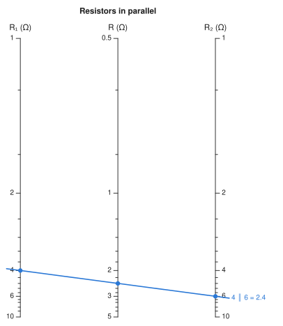
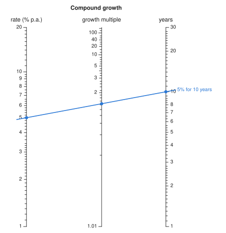

Nomograms.jl#
A nomogram is an analog computer printed on paper. Lay a straightedge through the values you know, and it crosses the remaining scale at the answer — no power, no keystrokes, just geometry. Nomograms.jl builds them from the formulas you already use, solves them numerically, and draws them as SVG or with Makie.
using Nomograms
nom = additive_nomogram(
Variable(:R1, ReciprocalScale(); domain = (1, 10), label = "R₁ (Ω)"),
Variable(:R2, ReciprocalScale(); domain = (1, 10), label = "R₂ (Ω)"),
Variable(:R, ReciprocalScale(); label = "R (Ω)");
title = "Resistors in parallel",
)
drawing(nom; isopleths = [isopleth(nom; R1 = 4, R2 = 6, label = "4 ∥ 6 = 2.4")])
The line from 4 Ω to 6 Ω crosses the middle scale at 2.4 Ω, which is 1/(1/4 + 1/6) — because of how the middle scale was placed, not because anything was looked up.
Installation#
using Pkg
Pkg.add(url = "https://github.com/mthelm85/Nomograms.jl")Start from your formula#
Hand auto_nomogram the function as you would ordinarily write it, with the range of each input, and it works out how to draw it:
growth = auto_nomogram(
(r, n) -> (1 + r / 100)^n,
Variable(:rate; domain = (1, 20), label = "rate (% p.a.)"),
Variable(:years; domain = (1, 30), label = "years"),
Variable(:growth; label = "growth multiple");
title = "Compound growth",
)
drawing(growth; isopleths = [isopleth(growth; rate = 5, years = 10, label = "5% for 10 years")])
Charts are also calculators. Any variable can be the unknown:
evaluate(growth; rate = 7, growth = 2) # how long until money doubles at 7%?(rate = 7.0, years = 10.24476835334911, growth = 2.0)Every chart from auto_nomogram is checked against your formula before it is returned, and a formula that has no such chart gets an error explaining why rather than a picture that lies. It takes any number of inputs. See From a formula.
Or build one by hand#
The chart at the top was built explicitly: additive_nomogram charts f₁(u) + f₂(v) = f₃(w), and 1/R = 1/R₁ + 1/R₂ is already in that form with every transform 1/x. R declares no domain — the middle axis's length and position follow from the outer two, so the construction works out the range it can reach:
nom[:R].domain(0.5, 5.0)Building by hand gives full control over the layout, and reaches charts that no formula test can find — curved scales, nets, reshaped layouts. See Building charts.
Contents#
From a formula —
auto_nomogram: when a formula has a chart, how the transforms are found, and charts with three or more inputs.Building charts — the parallel and N-chart constructions, curved scales from the determinant, and reshaping a chart without changing its answers.
Four or more variables — chaining charts through turning lines, and nets for when a chain will not do.
Solving — reading charts numerically, and why a line can cross a scale twice.
Drawing — SVG and Makie output, styling, and how ticks and labels are placed.
Gallery — a chart built by hand from raw curves, and a range of others with the code that draws them.
How it works — under the hood: how a chart is represented, constructed, solved, laid out and drawn.
API — every exported function and type.
Bibliography — the founding texts and where each classical result comes from.